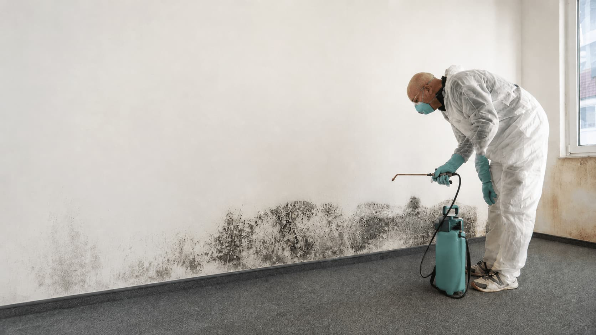
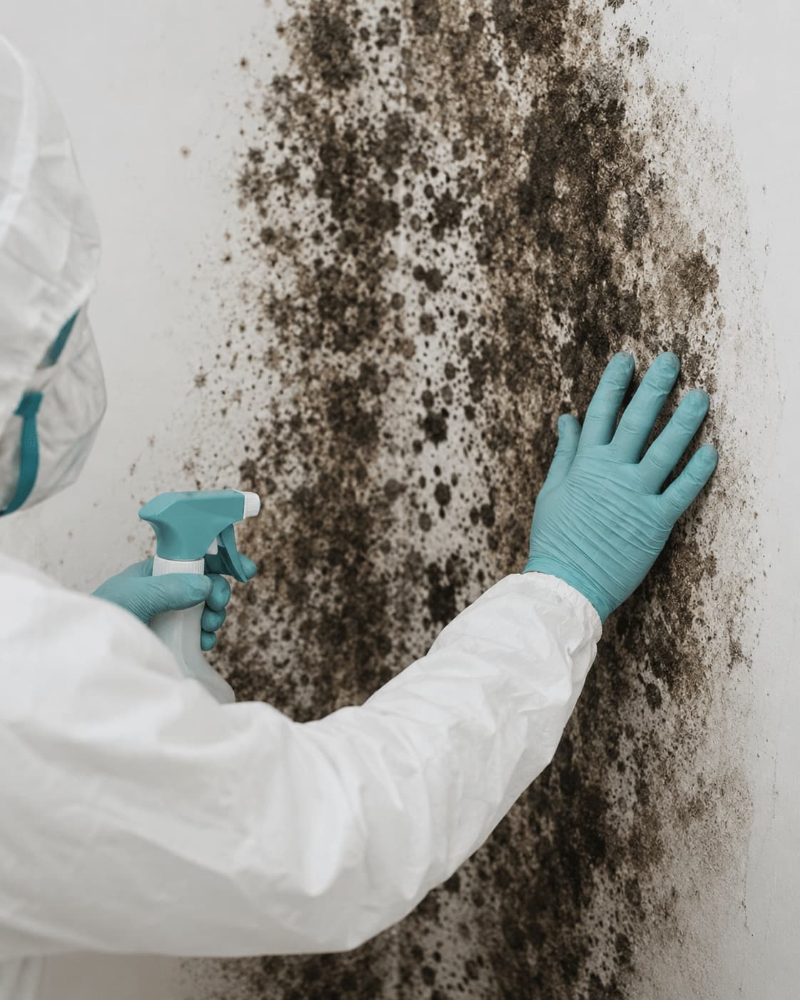

Suspected dark mold
For black or dark staining, recurring spots, visible growth, or moisture-prone areas.

Compare independent providers for suspected black mold concerns, dark staining, recurring moisture problems, musty rooms, affected drywall, basement growth, bathroom growth, or situations where homeowners want clearer provider options before choosing a remediation path.
Provider matching platform
Review provider options
Check scope and terms
MoldPros does not perform work

This path fits homeowners comparing providers for dark staining, recurring growth, musty areas, water damage history, basement or bathroom concerns, and situations where testing or professional assessment may be part of the next step.
For black or dark staining, recurring spots, visible growth, or moisture-prone areas.
For leaks, humidity, roof issues, plumbing problems, condensation, or past water damage.
For comparing provider explanations around containment, removal, disposal, cleaning, and written scope.
Black mold removal fits requests where homeowners are concerned about dark visible growth, recurring moisture, musty rooms, affected materials, or possible cleanup needs that should be compared carefully before hiring.
When black or dark spots appear on drywall, ceilings, trim, cabinets, tile areas, or basement surfaces.
When staining returns after cleaning or appears near leaks, humidity, condensation, or ventilation problems.
When you want providers to explain whether inspection, sampling, or lab analysis may be appropriate.
When you want to compare containment, cleanup scope, written estimates, and verification details before hiring.
Choose the black mold removal category and describe the staining, odor, moisture, or affected area.
Add useful context like room type, water history, recurrence, photos, ZIP code, access, and timing.
Compare independent provider options and verify assessment, testing, containment, cleanup, and pricing directly.
MoldPros helps organize the first step, but homeowners remain responsible for checking provider qualifications, testing procedures, containment methods, written estimates, warranty terms, cleanup details, and final project agreements.
Ask whether the provider holds any license or certification required for your state, city, or service type.
Confirm active insurance before approving inspection, testing, containment, removal, cleaning, or site work.
Ask how the provider evaluates suspected black mold and whether sampling, lab analysis, or written reporting is included.
Review containment, affected materials, disposal, cleaning methods, exclusions, timeline, and final pricing.
Suspected black mold concerns can involve inspection, testing, containment, material handling, disposal, cleaning, and moisture source questions. These questions help make provider responses easier to compare.
Ask whether the provider uses visual inspection, moisture readings, surface samples, air samples, lab testing, photos, or written findings.
Confirm how the work area may be isolated, how surrounding spaces are protected, and what equipment or procedures are included in the estimate.
Ask whether drywall, insulation, trim, cabinets, flooring, wood, or other materials may require cleaning, removal, disposal, or further review.
Confirm how larger affected areas, hidden moisture, difficult access, additional testing, extra removal, disposal, emergency timing, or repairs would be priced and approved.
Start with one compact request and review independent provider options before making a hiring decision.